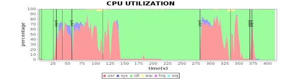
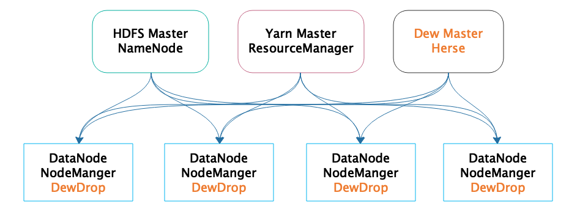
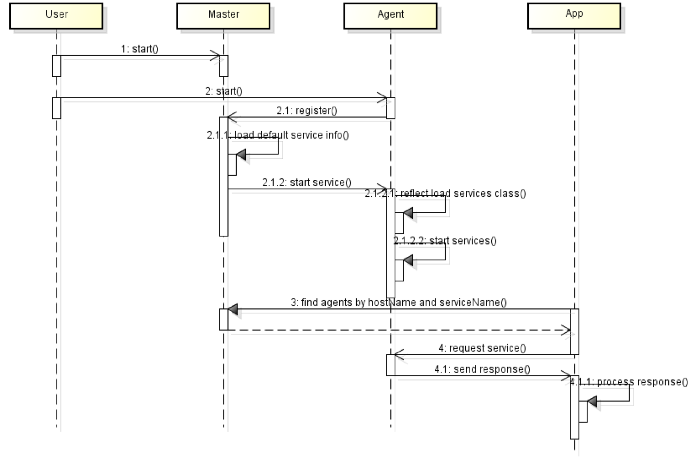
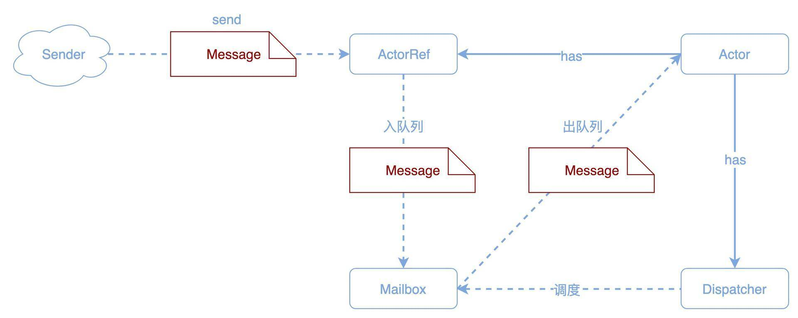

- 00 开篇词 为什么说每个软件工程师都应该懂大数据技术？.md
- 01 大数据技术发展史：大数据的前世今生.md
- 02 大数据应用发展史：从搜索引擎到人工智能.md
- 03 大数据应用领域：数据驱动一切.md
- 04 移动计算比移动数据更划算.md
- 05 从RAID看垂直伸缩到水平伸缩的演化.md
- 06 新技术层出不穷，HDFS依然是存储的王者.md
- 07 为什么说MapReduce既是编程模型又是计算框架？.md
- 08 MapReduce如何让数据完成一次旅行？.md
- 09 为什么我们管Yarn叫作资源调度框架？.md
- 10 模块答疑：我们能从Hadoop学到什么？.md
- 11 Hive是如何让MapReduce实现SQL操作的？.md
- 12 我们并没有觉得MapReduce速度慢，直到Spark出现.md
- 13 同样的本质，为何Spark可以更高效？.md
- 14 BigTable的开源实现：HBase.md
- 15 流式计算的代表：Storm、Flink、Spark Streaming.md
- 16 ZooKeeper是如何保证数据一致性的？.md
- 17 模块答疑：这么多技术，到底都能用在什么场景里？.md
- 18 如何自己开发一个大数据SQL引擎？.md
- 19 Spark的性能优化案例分析（上）.md
- 20 Spark的性能优化案例分析（下）.md
- 21 从阿里内部产品看海量数据处理系统的设计（上）：Doris的立项.md
- 22 从阿里内部产品看海量数据处理系统的设计（下）：架构与创新.md
- 23 大数据基准测试可以带来什么好处？.md
- 24 从大数据性能测试工具Dew看如何快速开发大数据系统.md
- 25 模块答疑：我能从大厂的大数据开发实践中学到什么？.md
- 26 互联网产品 + 大数据产品 = 大数据平台.md
- 27 大数据从哪里来？.md
- 28 知名大厂如何搭建大数据平台？.md
- 29 盘点可供中小企业参考的商业大数据平台.md
- 30 当大数据遇上物联网.md
- 31 模块答疑：为什么大数据平台至关重要？.md
- 32 互联网运营数据指标与可视化监控.md
- 33 一个电商网站订单下降的数据分析案例.md
- 34 A_B测试与灰度发布必知必会.md
- 35 如何利用大数据成为“增长黑客”？.md
- 36 模块答疑：为什么说数据驱动运营？.md
- 37 如何对数据进行分类和预测？.md
- 38 如何发掘数据之间的关系？.md
- 39 如何预测用户的喜好？.md
- 40 机器学习的数学原理是什么？.md
- 41 从感知机到神经网络算法.md
- 42 模块答疑：软件工程师如何进入人工智能领域？.md
- 所有的不确定都是机会——智慧写给你的新年寄语.md
- 第2季回归丨大数据之后，让我们回归后端.md
- 结束语 未来的你，有无限可能.md
24 从大数据性能测试工具Dew看如何快速开发大数据系统
我们在Spark性能优化案例分析这一期中，通过对大量的Spark服务器的性能数据进行可视化分析，发现了Spark在程序代码和运行环境中的各种性能问题，并做了相应优化，使Spark运行效率得到了极大提升。

很多同学也在问，这些可视化的性能数据从何而来呢？如何在图中将性能指标和任务进度结合起来，可以一目了然看清应用在不同运行阶段的资源使用状况呢？事实上，当时为了进行Spark性能优化，我和团队小伙伴们开发了一个专门的大数据性能测试工具Dew。
Dew设计与开发
Dew自身也是一个分布式的大数据系统，部署在整个Hadoop大数据集群的所有服务器上。它可以实时采集服务器上的性能数据和作业日志，收集起来以后解析这些日志数据，将作业运行时间和采集性能指标的时间在同一个坐标系绘制出来，就得到上面的可视化性能图表。Dew的部署模型如下。

从图中看，Dew的核心进程有两种，一种是Dew Master进程Herse，另一种是管理集群中每台服务器的Dew Agent进程DewDrop，Dew Agent监控整个Hadoop集群的每台服务器。Herse独立部署一台服务器，而DewDrop则和HDFS的DataNode、Yarn的NodeManager部署在大数据集群的其他所有服务器上，也就是每台服务器都同时运行DataNode、NodeManager、DewDrop进程。
Dew Master服务器上配置好Agent服务器的IP，运行下面的命令就可以启动整个Dew集群。
sbin/start-all.sh
Master进程Herse和每一台服务器上的Agent进程DewDrop都会启动起来，DewDrop进程会向Herse进程注册，获取自身需要执行的任务，根据任务指令，加载任务可执行代码，启动Drop进程内的service，或者独立进程service，即各种App。整个启动和注册时序请看下面这张图。

所以我们看Dew的架构，其自身也是一个典型的主从结构的大数据系统。跟所有其他的大数据系统一样，Dew也要有一套底层通信体系和消息传输机制。
当时我们的目标只是想做大数据性能测试与分析，进而优化Spark源代码。所以开发一个分布式大数据性能测试工具是辅助手段，本身不是最主要的目标，所以不可能花太多精力在系统开发上。所以需要寻找一个可以快速开发分布式底层通信体系和消息传输机制的编程框架。
很快，我们将目标锁定在Akka，这是一个可以同时支持并发编程、异步编程、分布式编程的编程框架，提供了Java和Scala两种编程语言接口，最关键的是Akka非常简单易用。
最后我们用Akka搭建了Dew的底层通信和消息传输机制，核心代码只有不到100行，花了大半天的时间就开发完成了。一个Master-Slave架构的大数据系统的基本框架就搭建起来了，后面加入分布式集群性能数据采集、日志收集也没花多少时间，很快就输出了我们前面看到的那些Spark性能图表，接着就可以开始对Spark做优化了。
如果你不太熟悉Akka，看完上面的内容，肯定会对这个如此强大又简单的Akka充满好奇。接下来我们就来看看Akka的原理和应用。
Akka原理与应用
Akka使用一种叫Actor的编程模型，Actor编程模型是和面向对象编程模型平行的一种编程模型。面向对象认为一切都是对象，对象之间通过消息传递，也就是方法调用实现复杂的功能。
而Actor编程模型认为一切都是Actor，Actor之间也是通过消息传递实现复杂的功能，但是这里的消息是真正意义上的消息。不同于面向对象编程时，方法调用是同步阻塞的，也就是被调用者在处理完成之前，调用者必须阻塞等待；给Actor发送消息不需要等待Actor处理，消息发送完就不用管了，也就是说，消息是异步的。
面向对象能够很好地对要解决的问题领域进行建模，但是随着摩尔定律失效，计算机的发展之道趋向于多核CPU与分布式的方向，而面向对象的同步阻塞调用，以及由此带来的并发与线程安全问题，使得其在新的编程时代相形见绌。而Actor编程模型很好地利用了多核CPU与分布式的特性，可以轻松实现并发、异步、分布式编程，受到人们越来越多的青睐。
事实上，Actor本身极为简单，下面是一个Scala语言的Actor例子。
class MyActor extends Actor {
val log = Logging(context.system, this)
def receive = {
case "test" ⇒ log.info("received test")
case _ ⇒ log.info("received unknown message")
}
}
一个Actor类最重要的就是实现receive方法，在receive里面根据Actor收到的消息类型进行对应的处理。而Actor之间互相发送消息，就可以协作完成复杂的计算操作。
Actor之间互相发送消息全部都是异步的，也就是说，一个Actor给另一个Actor发送消息，并不需要等待另一个Actor返回结果，发送完了就结束了，自己继续处理别的事情。另一个Actor收到发送者的消息后进行计算，如果想把计算结果返回给发送者，只需要给发送者再发送一个消息就可以了，而这个消息依然是异步的。
这种全部消息都是异步，通过异步消息完成业务处理的编程方式也叫响应式编程，Akka的Actor编程就是响应式编程的一种。目前已经有公司在尝试用响应式编程代替传统的面向对象编程，去开发企业应用和网站系统，如果这种尝试成功了，可能会对整个编程行业产生巨大的影响。
Akka实现异步消息的主要原理是，Actor之间的消息传输是通过一个收件箱Mailbox完成的，发送者Actor的消息发到接收者Actor的收件箱，接收者Actor一个接一个地串行从收件箱取消息调用自己的receive方法进行处理。这个过程请看下面的图。

发送者通过调用一个Actor的引用ActorRef来发送消息，ActorRef将消息放到Actor的Mailbox里就返回了，发送者不需要阻塞等待消息被处理，这是和传统的面向对象编程最大的不同，对象一定要等到被调用者返回结果才继续向下执行。
通过这种异步消息方式，Akka也顺便实现了并发编程：消息同时异步发送给多个Actor，这些Actor看起来就是在同时执行，即并发执行。
当时Dew使用Akka，主要用途并不是需要Akka的并发、异步特性，而是主要用到它的分布式特性。
Akka创建Actor需要用ActorSystem创建。
val system = ActorSystem("pingpong")
val pinger = system.actorOf(Props[Pinger], "pinger")
当Actor的Props配置为远程的方式，就可以监听网络端口，从而进行远程消息传输。比如下面的Props配置sampleActor监听2553端口。
akka {
actor {
deployment {
/sampleActor {
remote = "akka.tcp://[email protected]:2553"
}
}
}
}
所以使用Akka编程，写一个简单的Actor，实现receive方法，配置一个远程的Props，然后用main函数调用ActorSystem启动，就得到了一个可以远程通信的JVM进程。使用Akka，Dew只用了100多行代码，就实现了一个Master-Slave架构的分布式集群。
小结
现在微服务架构大行其道，如果用Akka的Actor编程模型，无需考虑微服务架构的各种通信、序列化、封装，只需要将想要分布式部署的Actor配置为远程模式就可以了，不需要改动任何一行代码。是不是很酷呢？
此外，Actor的交互方式看起来是不是更像人类的交互方式？拜托对方一件事情，说完需求就结束了，不需要傻傻地等在那里，该干嘛干嘛。等对方把事情做完了，再过来跟你说事情的结果，你可以根据结果决定下一步再做什么。
人类社会的主要组织方式是金字塔结构，老板在最上面，各级领导在中间，最下面是普通干活的员工。所以一个理想的Actor程序也是同样，采用金字塔的结构，顶层Actor负责总体任务，将任务分阶段、分类以后交给下一级多个Actor，下一级Actor拆分成具体的任务交给再下一级更多的Actor，众多的底层Actor完成具体的细节任务。
这种处理方式非常符合大数据的计算，大数据计算通常都分成多个阶段，每个阶段又处理一个数据集的多个分片，这样用Actor模型正好可以对应上。所以我们看到有的大数据处理系统直接用Akka实现，它们程序简单，运行也很良好，比如大数据流处理系统Gearpump。
思考题
我们前面提到，Akka的远程Actor可以实现分布式服务，我在专栏第15期的思考题提到过基于消息的流式架构，那么能否用Akka实现一个流式的分布式服务呢？如果可以，对于一个典型的Web请求，比如注册用户，这样的流式分布式服务处理过程是什么样的呢？
欢迎你点击“请朋友读”，把今天的文章分享给好友。也欢迎你写下自己的思考或疑问，与我和其他同学一起讨论。
© 2019 - 2023 Liangliang Lee. Powered by gin and hexo-theme-book.